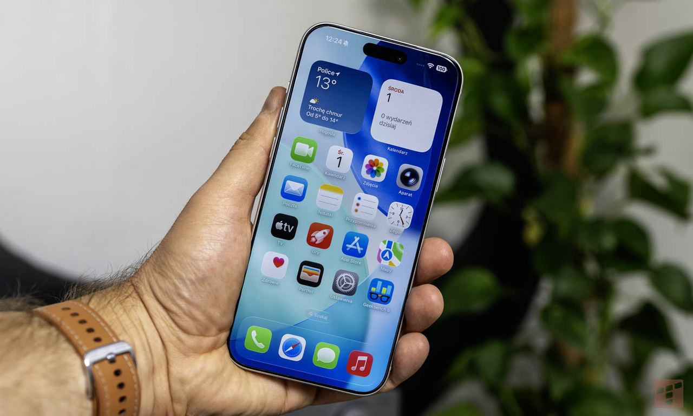
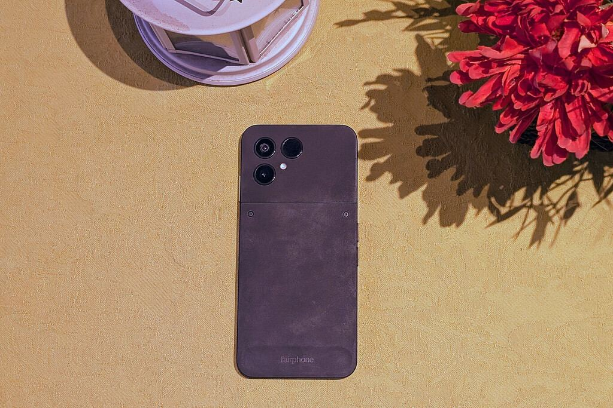
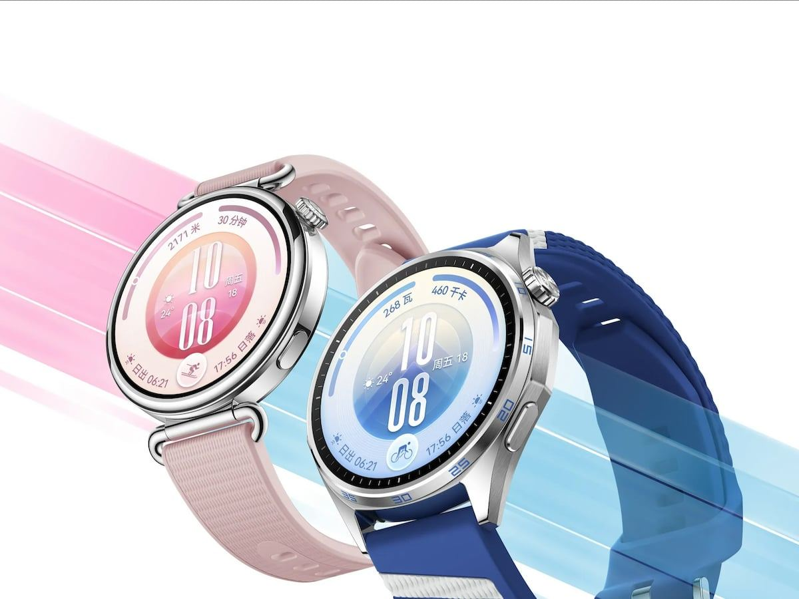
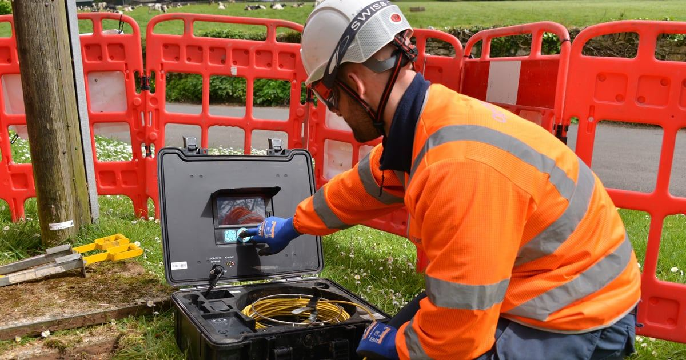
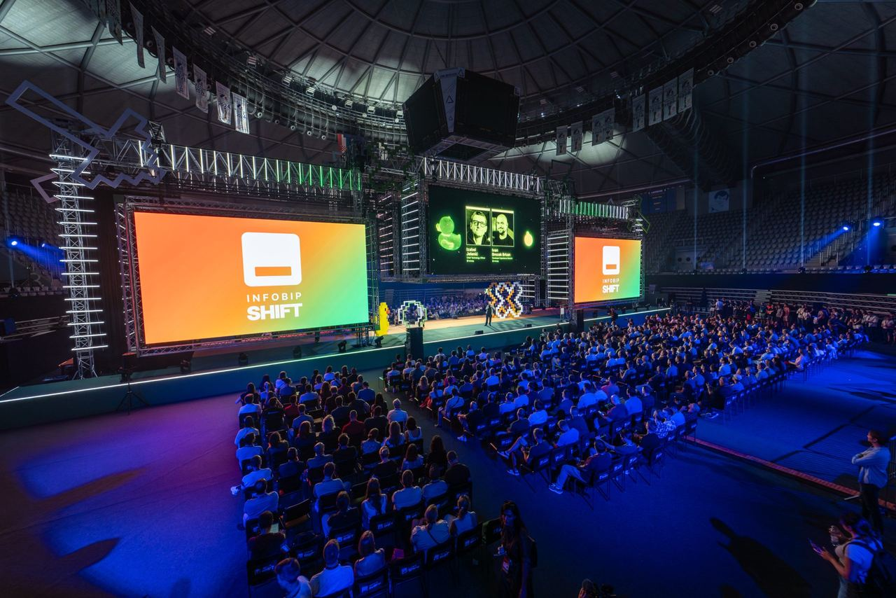
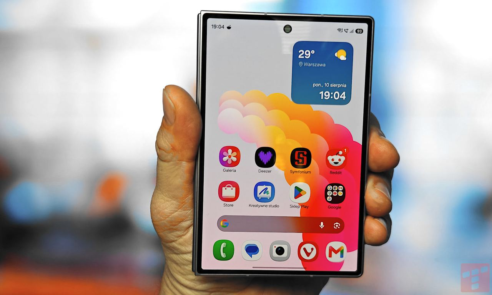
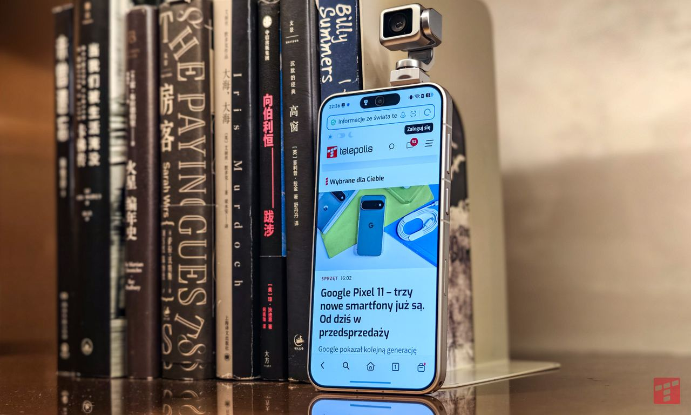
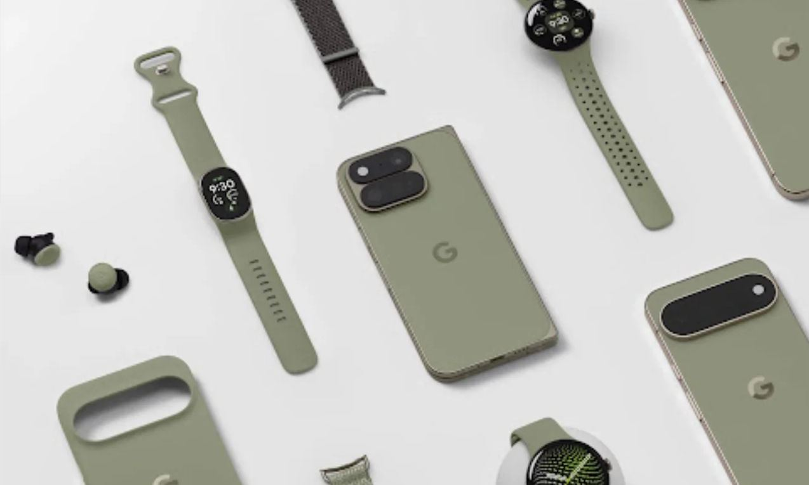
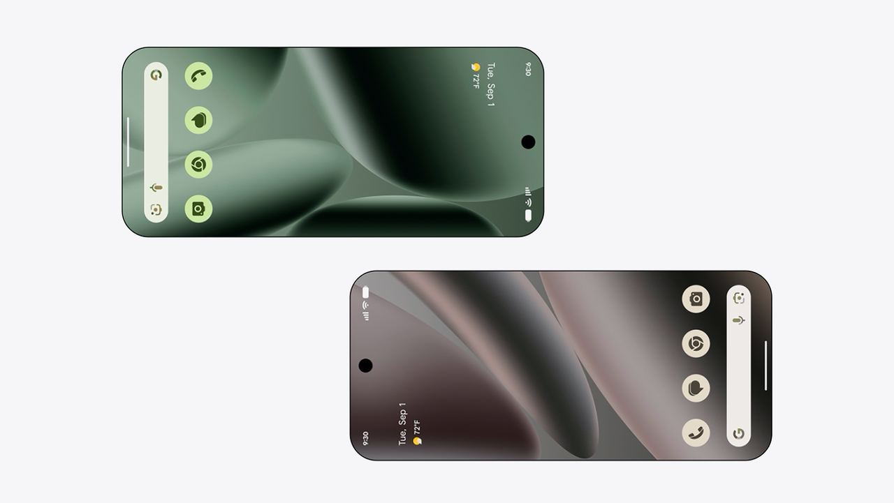

Ausgabe vom 18. August 2026
Alle Meldungen
Netz & Technik

Apple startet eigenes Modell für künstliche Intelligenz in ChinaTarife & Angebote

Fairphone 6 Plus startet am 18. August
Huawei stellt Watch GT 7 am 2. September vorSatellit & Direct-to-Cell
Regulierung & Politik

Openreach schaltet analoges PSTN in sechs Monaten abGeld & Übernahmen
Partnerschaften
 Ecotel stärkt indirekten Vertrieb mit Partner Circles
Ecotel stärkt indirekten Vertrieb mit Partner Circles
Vermischtes

OpenAI präsentiert KI-Agenten auf Infobip Shift
Tarife & Angebote
12 Meldungen


Samsung Galaxy Z Fold8 überzeugt trotz Schwächen
Honor startet Verkauf des Robot Phone
Google zeigt neue Fitness-Armband in Werbung
Pixel teilt Kontakte per Tap-to-Share
Satellit & Direct-to-Cell
1 Meldungen
Regulierung & Politik
2 Meldungen
Frühere Ausgaben
18. August 2026
882 neue Meldungen
17. August 2026
897 neue Meldungen
15. August 2026
810 neue Meldungen
14. August 2026
944 neue Meldungen
8. August 2026
256 neue Meldungen
7. August 2026
381 neue Meldungen
6. August 2026
642 neue Meldungen
5. August 2026
426 neue Meldungen
4. August 2026
124 neue Meldungen
31. Juli 2026
220 neue Meldungen
28. Juli 2026
9 neue Meldungen
27. Juli 2026
49 neue Meldungen
26. Juli 2026
4 neue Meldungen
25. Juli 2026
11 neue Meldungen
21. Juli 2026
185 neue Meldungen
20. Juli 2026
27 neue Meldungen
19. Juli 2026
233 neue Meldungen
17. Juli 2026
257 neue Meldungen
16. Juli 2026
1991 neue Meldungen